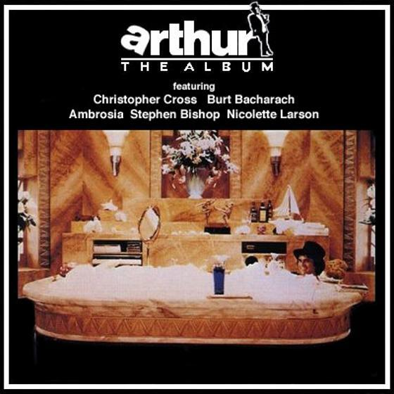
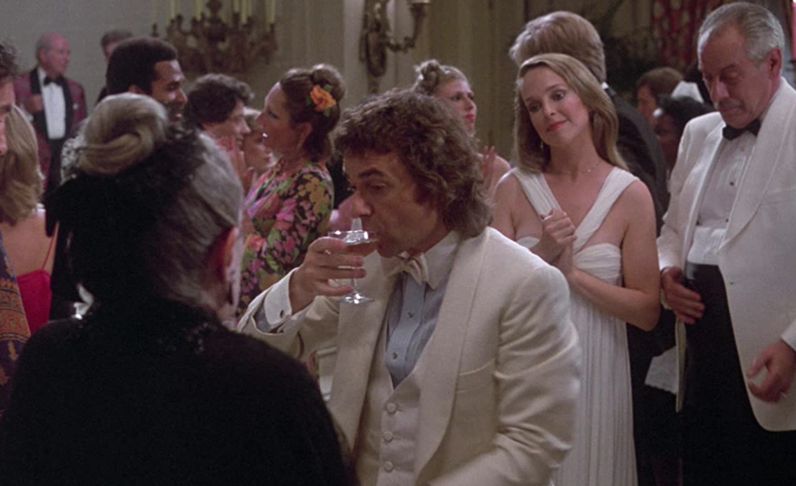

안녕하세요 라보엠입니다.
저는 어릴적부터 ABBA 나 Carpenters 를 듣고 자라서 그런지 아직도 클래식한 팝을 좋아합니다.
작년에 어느 음식점에서 포장을 하려고 기다리다가 라디오에서 이 노래를 들었습니다. 제목은 모르는데 어디선가 많이 들어본 것 같은 경험이 다들 있으시죠? 그 자리에서 노래 제목을 얼른 찾아봤죠. 노래 제목은 기억에서 지워졌지만 저의 어느 부분인가 오랫동안 잠들어 있다가 우연하게도 깨어난 노래 Arthur's Theme 입니다.

Arthur's Theme (Best That You Can Do) - Christopher Cross 1981
1981년 영화 Arthur 의 주제가인 이 노래는 1981년 아카데미 주제가상과 1982년 골든 글로브 주제가 상을 받은 명곡입니다.
이 노래의 노랫말이 나온 계기가 재미있습니다. 작사가인 피터 앨런이 뉴욕 JFK 국제 공항에 밤에 도착하게 되었는데, 비행기가 많아 자신이 탄 비행기가 밤 하늘을 선회하게 되었다고 합니다. 이 와중에 스튜어디스에게 한 눈에 반해, 밤하늘의 달과 뉴욕 사이에 갇혀있으나 지금 할 수 있는 최선의 방법은 사랑에 빠지는 것 - Best That You Can Do - 이라는 노랫말을 지었습니다.
이 영화의 주인공인 백만장자의 아들인 arthur 는 재멋대로의 성격으로 재산과 사랑에 빠진 웨이트리스 중에 하나를 선택해야하는 기로에서 사랑을 선택합니다. 아름다운 은유와 영화속 주인공의 상황이 2절 가사에 담겨져 있습니다.

Arthur's Theme 가사
[Verse 1]
Once in your life you find her
Someone that turns your heart around
And next thing you know you're closing down the town
인생에서 한 번은 그녀를 만나겠죠.
당신의 마음을 전부 바꾸어 놓는 사람
그 다음에는, 그 마을을 떠나고 있는 것을 알게 될 거에요.
Wake up and it's still with you
Even though you left her way 'cross town
Wondering to yourself, "Hey, what've I found?"
잠에서 깨도 그녀와 함께 있을 거에요
그녀를 마을에 두고왔지만
"대체 내가 뭘 하고 있는거지" 스스로 궁금해할 것이다
[Chorus]
When you get caught between the moon and New York City
I know it's crazy, but it's true
만일 당신이 달과 뉴욕시 사이에서 갇힌다면
물론 이상하겠지만, 그렇게 되어버리면
If you get caught between the moon and New York City
The best that you can do
The best that you can do
Is fall in love
만일 당신이 달과 뉴욕시 사이에서 갇힌다면
당신이 할 수 있는 최선의 일
당신이 할 수 있는 최선의 일은
사랑에 빠지는 것 뿐입니다.
[Verse 2]
Arthur, he does as he pleases
All of his life, his master's toys
Deep in his heart, he's just, he's just a boy
아서는 자신이 하고 싶은 대로 합니다.
평생 그의 인생은 그의 주인의 장난감일뿐이었죠.
그의 마음 깊은 곳에서, 그는 그저 아이일 뿐입니다.
Living his life one day at a time
And showing himself a pretty good time
Laughing about the way they want him to be
그는 하루하루를 살아가면서
정말 좋은 시간을 보내고 있습니다.
그는 다른 사람들이 기대하는 모습에 대해서는 웃어 넘기면서 말이죠.
[Chorus]
When you get caught between the moon and New York City
I know it's crazy, but it's true
만일 당신이 달과 뉴욕시 사이에서 갇힌다면
물론 이상하겠지만, 그렇게 되어버리면
If you get caught between the moon and New York City
The best that you can do
The best that you can do
Is fall in love
만일 당신이 달과 뉴욕시 사이에서 갇힌다면
당신이 할 수 있는 최선의 일은
당신이 할 수 있는 최선의 일은
사랑에 빠지는 것 뿐입니다.
[Saxophone Solo]
[Chorus (Repeat Until Fade-Out)]
When you get caught between the moon and New York City
I know it's crazy, but it's true
만일 당신이 달과 뉴욕시 사이에서 갇힌다면
물론 이상하겠지만, 그렇게 되어버리면
If you get caught between the moon and New York City
The best that you can do
The best that you can do
Is fall in love
만일 당신이 달과 뉴욕시 사이에서 갇힌다면
당신이 할 수 있는 최선의 일은
당신이 할 수 있는 최선의 일은
사랑에 빠지는 것 뿐입니다.
Arthur's Theme 리메이크
이 노래는 리메이크도 많이 되었는데요. 그 중 제가 가장 좋아하는 영국의 여성 가수 Rumer 의 리메이크 판도 추천드립니다..